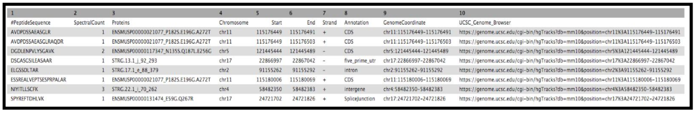

Proteogenomics 3: Novel peptide analysis
 Subina Mehta
Subina Mehta Timothy J. Griffin
Timothy J. Griffin Pratik Jagtap
Pratik Jagtap Ray Sajulga
Ray Sajulga James Johnson
James Johnson Praveen Kumar
Praveen KumarOverview
question Questionsobjectives Objectives
- How to verify the spectra of novel proteoforms?
- How to assign genomic allocation to these novel proteoforms?
requirements Requirements
- How to assign and visualize the genomic localization of these identified novel proteoforms?
time Time estimation: 30 minutes
Supporting Materials
Introduction
The third and the last workflow in the proteogenomics tutorial is to identifying the “Novel peptides” using BlastP and to localize the peptides to its genomic coordinates. Inputs from both workflow 1 and 2 will be used in this workflow.

Agenda
In this tutorial, we will deal with:
Pretreatments
All the files to run this workflow can be obtained from the second tutorial output. Once the tabular output is generated, we convert this tabular report into a FASTA file. This can be achieved by using the Tabular to FASTA convertion tool.
hands_on Hands-on: data organization
- The inputs for this workflow are:
- Tabular file – “Peptides from BlastP analysis”
- Tabular file – “PeptideShaker_PSM”
- Mz to sqlite
- Genomic mapping sqlite
If you do not have these files from the previous tutorials in this series, you can import them from Zenodo:
https://zenodo.org/record/1489208/files/Peptides_for_Blast-P_analysis.tabular https://zenodo.org/record/1489208/files/PeptideShaker_PSM.tabular https://zenodo.org/record/1489208/files/mz_to_sqlite.mz.sqlite https://zenodo.org/record/1489208/files/genomic_mapping_sqlite.sqlite
Peptide Selection
Once Blast-P search is performed, it provides a tabular output containing “Novel peptides”. Now this output is further processed by comparing the Novel Peptide output with the PSM report for selecting only distinct peptides which meet the criteria.
hands_on Hands-on: Query Tabular
- Query Tabular tool with the following parameters:
- param-repeat Insert Database Table
- Section Table Options
- “Specify Name for Table”:
blast- “Use first line as column names” :
No- “Specify Column Names (comma-separated list)”:
qseqid,sseqid,pident,length,mismatch,gapopen,qstart,qend,sstart,send,evalue,bitscore,sallseqid,score,nident,positive,gaps,ppos,qframe,sframe,qseq,sseq,qlen,slen,salltitles- “Only load the columns you have named into database”:
Yes- param-repeat Insert Table Index
- “Table Index”:
No- “Index on Columns”:
id- param-repeat Insert Database Table
- Section Filter Dataset Input
- param-repeat Filter Tabular Input Lines
- “Filter by”:
skip leading lines- “Skip lines”:
1- Section Table Options
- “Specify Name for Table”:
psm- “Use first line as column names” :
No- “Specify Column Names (comma-separated list)”:
ID,Proteins,Sequence,AAs_Before,AAs_After,Position,Modified_Sequence,Variable_Modifications,Fixed_Modifications,Spectrum_File,Spectrum_Title,Spectrum_Scan_Number,RT,mz,Measured_Charge,Identification_Charge,Theoretical_Mass,Isotope_Number,Precursor_mz_Error_ppm,Localization_Confidence,Probabilistic_PTM_score,Dscore,Confidence,Validation- “Only load the columns you have named into database”:
Yes“Save the sqlite database in your history”:
Nocomment Querying an SQLite Database
Query Tabular can also use an existing SQLite database. Activating
Save the sqlite database in your historywill store the created database in the history, allowing to reuse it directly.- “SQL Query to generate tabular output”:
SELECT distinct psm.* FROM psm join blast ON psm.Sequence = blast.qseqid WHERE blast.pident < 100 OR blast.gapopen >= 1 OR blast.length < blast.qlen ORDER BY psm.Sequence, psm.ID- “Include query result column headers”:
Yes- Click Execute and inspect the query results file after it turned green.
Once this step is completed, a tabular output containing novel proteoforms are displayed. These novel proteforms fulfill our criteria of not being present in the existing NCBI repository. The next step is to remove any duplicate sequences. For this, we use the Query tabular tool again to select distinct sequences from the tabular output.
hands_on Hands-on: Query Tabular
- Query Tabular tool: with the following parameters:
- param-repeat Insert Database Table
- Section Filter Dataset Input
- param-repeat Insert Filter Tabular Input Lines
- “Filter by”:
skip leading lines- “Skip lines”:
1- Section Table Options
- “Specify Name for Table”:
psm- “Use first line as column names” :
No- “Specify Column Names (comma-separated list)”:
ID,Proteins,Sequence- “Only load the columns you have named into database”:
Yes- “SQL Query to generate tabular output”:
SELECT distinct Sequence from psm- “include query result column headers”:
Yes- Click Execute and inspect the query results file after it turned green.
Multiomics Visualization Platform (MVP)
The Multiomics Visualization Platform is a galaxy visualization plugin that allows the user to browse the selected proteomics data. It uses the SQlite database which allows the data to be filtered and aggregated in a user defined manner. It allows various features such as; the PSM can be displayed with a lorikeet spectral view, the selected peptide can be displayed in a protein view and an IGV browser is also available for the selected protein. The step by step guide shown below will provide a walkthrough on how to use this plugin.
hands_on Hands-on: Guide to MVP
The spectra belonging to these “Novel peptides” can be viewed using MVP,this can be achieved by selecting the output from the mz to sqlite tool. Here is a step by step guide to obtain the proteogenomic view of the “Novel peptides”.
1) Click on the Visualize in MVP application, it will open up a new window for MVP.
2) Click on Load from Galaxy.
3) Select Novel Peptides from the right hand side.
4) Select any peptide, For eg:
ESSREALVEPTSESPRPALAR, and then click on Selected Peptide PSMs.
5) If you scroll down, the PSM associated with the peptide will be displayed. By clicking on the PSM, the Lorikeet values will be shown. The Lorikeet visualization is interactive, i.e the user can change the values or select any parameter and click on Update button to view these changes.
6) For a Protein centric view, click on View in Protein , it will open up all the proteins associate with the peptides. For eg: Select the
ESSREALVEPTSESPRPALARpeptide and click on the first protein. The chromosome location of the peptide will be displayed.
Once you click on protein it will show the list of proteins the belongs to the peptides.
Once you select the protein that you want to visualize you can click on the protein view.
7) Clicking on the arrow marks will open up the IGV(js) visualization tool, where-in the genomic localization of the peptide will be displayed.
8) To add tracks to your IGV viewer, click on Add Track. This will open up a list of tracks that are compatible to view in your IGV viewer. For eg. Select the
Pep_gen_coordinate.bedfile and then click on Load Track. This will open up the bed will below the nucleotide sequence.
9) By clicking the wheel, you can select the three frame translate which will show the three frame translated region of your sequence.
10) The IGV is inbuilt in the MVP viewer and is very interactive, you could also load more tracks such as the aligned proBAM file (from HISAT) or the identified probam file (one of the input file). MVP has many useful features beyond those covered in this workshop and is under active development.


The next tool in the workflow is the Peptide genomic coordinate tool which takes the “novel peptides” as the input along with the mztosqlite file and the genomic mapping sqlite file (obtained during creation of the database). This tool helps create a bed file with the genomic coordinate information of the peptides based on the sqlite files.
Obtain Peptide genomic Coordinates
Gets genomic coordinate of peptides based on the information in mzsqlite and genomic mapping sqlite files. This program loads two sqlite databases (mzsqlite and genomic mapping sqlite files) and calculates the genomic coordinates of the peptides provided as input. This outputs bed file for peptides.
hands_on Hands-on: Peptide genomic Coordinate
- Run Peptide genomic Coordinate tool with the following parameters:
- “Input”:
Peptide list file,mzsqlite sqlite DB file, andgenomic mapping sqlite DB file“Output”:
Tabular BED file with all the columns
- Click Execute and inspect the resulting files

Classify Peptides
Given chromosomal locations of peptides in a BED file, PepPointer classifies them as CDS, UTR, exon, intron, or intergene.
hands_on Hands-on: Peppointer
- Peppointer tool with the following parameters:
- param-select “Choose the source of the GTF file” -
Locally Installed- param-file “GTF file with the genome of interest” -
Mus_Musculus_GRCm38.90_Ensembl_GTF- param-file “BED file with chromosomal coordinates of peptides”:
Bed file from Peptide genomic coordinate tool- Click Execute and inspect the query results file after it turned green.
This tool provides a bed output with the classification of the genomic location of the peptides.

The final tool for this workflow generates a tabular output that summarizes the information after running these workflows. The final summary output consists of the Peptide sequence, the spectra associated with the peptides, the protein accession number, chromosome number, Start and Stop of the genomic coordinate, the annotation, the genomic coordinate entry for viewing in Integrative Genomics Viewer (IGV), MVP or UCSC genome browser and the URL for viewing it on UCSC genome browser. This summary is created with the help of the query tabular tool.
Final Summary Output
hands_on Hands-on: Query Tabular
- Query Tabular tool with the following parameters:
- param-repeat Insert Database Table
- Section Table Options:
- “Specify Name for Table”:
bed_pep_pointer- “Use first line as column names” :
No- “Specify Column Names (comma-separated list)”:
chrom,start,end,peptide,score,strand,annot- “Only load the columns you have named into database”:
No- param-repeat Insert Database Table
- Section Filter Dataset Input
- param-repeat Insert Filter Tabular Input Lines
- “Filter by”:
skip leading lines- “Skip lines”:
1- Section Table Options
- “Specify Name for Table”:
psm- “Use first line as column names” :
No- “Specify Column Names (comma-separated list)”:
ID,Proteins,Sequence,AAs_Before,AAs_After,Position,Modified_Sequence,Variable_Modifications,Fixed_Modifications,Spectrum_File,Spectrum_Title,Spectrum_Scan_Number,RT,mz,Measured_Charge,Identification_Charge,Theoretical_Mass,Isotope_Number,Precursor_mz_Error_ppm,Localization_Confidence,Probabilistic_PTM_score,Dscore,Confidence,Validation- “Only load the columns you have named into database”:
No- “SQL Query to generate tabular output”:
SELECT psm.Sequence AS PeptideSequence, count(psm.Sequence) AS SpectralCount, psm.Proteins AS Proteins, bed_pep_pointer.chrom AS Chromosome, bed_pep_pointer.start AS Start, bed_pep_pointer.end AS End, bed_pep_pointer.strand AS Strand, bed_pep_pointer.annot AS Annotation, bed_pep_pointer.chrom||':'||bed_pep_pointer.start||'-'||bed_pep_pointer.end AS GenomeCoordinate, 'https://genome.ucsc.edu/cgi-bin/hgTracks?db=mm10&position='||bed_pep_pointer.chrom||'%3A'||bed_pep_pointer.start||'-'||bed_pep_pointer.end AS UCSC_Genome_Browser FROM psm INNER JOIN bed_pep_pointer on bed_pep_pointer.peptide = psm.Sequence GROUP BY psm.Sequence- “include query result column headers”:
YesClick Execute and inspect the query results file after it turned green. If everything went well, it should look similiar:

The Final summary displays a tabular output containing the list of novel peptides and its corresponding protein. It also provides the users with the chromosomal location of the novel proteoform along with the peptide’s start and end position. The output also features the strand information, gene annotation and the genomic coordinates in a specific format that could be used on IGV or UCSC browser. It also provides the user with a UCSC Genome Browser link, which the user can directly copy and paste it on a web browser to learn more about the novel proteoform. Here we are demonstrating the use of proteogenomics workflow on an example trimmed mouse dataset. This study explores the possibilities for downstream biological /functional analysis of peptides corresponding to novel proteoforms.
What’s next?
This completes the proteogenomics workflow analysis. This training workflow uses mouse data. For any other organism the data, tool paramters and the workflow will need to be modified accordingly.
Please look at the following tutorials in this proteogenomics series:
This workflow is also available at Proteogenomics gateway.
This workflow was developed by the Galaxy-P team at the University of Minnesota. For more information about Galaxy-P or our ongoing work, please visit us at galaxyp.org
keypoints Key points
- Learning how to visualize proteomic data and to perform its genomic allocation
Useful literature
Further information, including links to documentation and original publications, regarding the tools, analysis techniques and the interpretation of results described in this tutorial can be found here.
congratulations Congratulations on successfully completing this tutorial!
curriculum Do you want to extend your knowledge? Follow one of our recommended follow-up trainings:
- Proteomics
- Proteogenomics 1: Database Creation: tutorial hands-on
- Proteomics
- Proteogenomics 2: Database Search: tutorial hands-on
feedback Give us even more feedback on this content!
To give us more detailed feedback about these materials, please take a moment to fill in the extended Feedback Form.